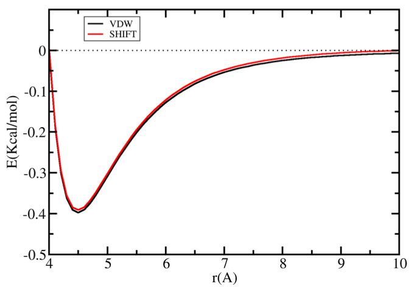

Intermolecular Energy and Virial Function (Van der Waals)¶
In this section, the virial and energy equation of Van der Waals interaction for different potential function are discussed in details.
VDW¶
This option calculates potential energy without any truncation.
Potential CalculationInteractions between atoms can be modeled with an n-6 potential, a Mie potential in which the attractive exponent is fixed. The Mie potential can be viewed as a generalized version of the 12-6 Lennard-Jones potential,
\[E_{\texttt{VDW}}(r_{ij}) = C_{n_{ij}} \epsilon_{ij} \bigg[\bigg(\frac{\sigma_{ij}}{r_{ij}}\bigg)^{n_{ij}} - \bigg(\frac{\sigma_{ij}}{r_{ij}}\bigg)^6\bigg]\]where \(r_{ij}\), \(\epsilon_{ij}\), and \(\sigma_{ij}\) are, respectively, the separation, minimum potential, and collision diameter for the pair of interaction sites \(i\) and \(j\). The constant \(C_n\) is a normalization factor such that the minimum of the potential remains at \(-\epsilon_{ij}\) for all \(n_{ij}\). In the 12-6 potential, \(C_n\) reduces to the familiar value of 4.
\[C_{n_{ij}} = \bigg(\frac{n_{ij}}{n_{ij} - 6} \bigg)\bigg(\frac{n_{ij}}{6} \bigg)^{6/(n_{ij} - 6)}\]Virial CalculationVirial is basically the negative derivative of energy with respect to distance, multiplied by distance.
\[W_{\texttt{VDW}}(r_{ij}) = -\frac{dE_{\texttt{VDW}}(r_{ij})}{r_{ij}}\times \frac{\overrightarrow{r_{ij}}}{{r_{ij}}} = F_{\texttt{VDW}}(r_{ij}) \times \frac{\overrightarrow{r_{ij}}}{{r_{ij}}}\]Using n-6 LJ potential defined above:
\[F_{\texttt{VDW}}(r_{ij}) = 6C_{n_{ij}} \epsilon_{ij} \bigg[\frac{n_{ij}}{6} \times \bigg(\frac{\sigma_{ij}}{r_{ij}}\bigg)^{n_{ij}} - \bigg(\frac{\sigma_{ij}}{r_{ij}}\bigg)^6\bigg]\times \frac{1}{{r_{ij}}}\]
Note
This option only evaluates the energy up to specified Rcut distance. Tail correction to energy and pressure can be specified to account for infinite cutoff distance.
EXP6¶
This option calculates potential energy without any truncation.
Potential CalculationInteractions between atoms can be modeled with an exp-6 (Buckingham) potential,
\[\begin{split}E_{\texttt{VDW}}(r_{ij}) = \begin{cases} \frac{\alpha_{ij}\epsilon_{ij}}{\alpha_{ij}-6} \bigg[\frac{6}{\alpha_{ij}} \exp\bigg(\alpha_{ij} \bigg[1-\frac{r_{ij}}{R_{min,ij}} \bigg]\bigg) - {\bigg(\frac{R_{min,ij}}{r_{ij}}\bigg)}^6 \bigg] & r_{ij} \geq R_{max,ij} \\ \infty & r_{ij} < R_{max,ij} \end{cases}\end{split}\]where \(r_{ij}\), \(\epsilon_{ij}\), and \(R_{min,ij}\) are, respectively, the separation, minimum potential, and minimum potential distance for the pair of interaction sites \(i\) and \(j\). The constant \(\alpha_{ij}\) is an exponential-6 parameter. The cutoff distance \(R_{max,ij}\) is the smallest positive value for which \(\frac{dE_{\texttt{VDW}}(r_{ij})}{dr_{ij}}=0\).
Note
In order to use
MieorExoticepotential file format forBuckinghampotential, instead of defining \(R_{min}\), we define \(\sigma\) (collision diameter or the distance, where potential is zero) and GOMC will calculate the \(R_{min}\) and \(R_{max}\) usingBuckinghampotential equation.Virial CalculationVirial is basically the negative derivative of energy with respect to distance, multiplied by distance.
\[W_{\texttt{VDW}}(r_{ij}) = -\frac{dE_{\texttt{VDW}}(r_{ij})}{r_{ij}}\times \frac{\overrightarrow{r_{ij}}}{{r_{ij}}} = F_{\texttt{VDW}}(r_{ij}) \times \frac{\overrightarrow{r_{ij}}}{{r_{ij}}}\]Using exp-6 potential defined above:
\[\begin{split}F_{\texttt{VDW}}(r_{ij}) = \begin{cases} \frac{6 \alpha_{ij}\epsilon_{ij}}{r_{ij}\big(\alpha_{ij}-6\big)} \bigg[\frac{r_{ij}}{R{min,ij}} \exp\bigg(\alpha_{ij} \bigg[1-\frac{r_{ij}}{R_{min,ij}} \bigg]\bigg) - {\bigg(\frac{R_{min,ij}}{r_{ij}}\bigg)}^6 \bigg] & r_{ij} \geq R_{max,ij} \\ \infty & r_{ij} < R_{max,ij} \end{cases}\end{split}\]
Note
This option only evaluates the energy up to specified Rcut distance. Tail correction to energy and pressure can be specified to account for infinite cutoff distance.
Graph of Van der Waals interaction for comparison of VDW and EXP6 potentials.¶
SHIFT¶
This option forces the potential energy to be zero at Rcut distance.
Potential CalculationInteractions between atoms can be modeled with an n-6 potential,
\[E_{\texttt{VDW}}(r_{ij}) = C_{n_{ij}} \epsilon_{ij} \bigg[\bigg(\frac{\sigma_{ij}}{r_{ij}}\bigg)^{n_{ij}} - \bigg(\frac{\sigma_{ij}}{r_{ij}}\bigg)^6\bigg] - C_{n_{ij}} \epsilon_{ij} \bigg[\bigg(\frac{\sigma_{ij}}{r_{cut}}\bigg)^{n_{ij}} - \bigg(\frac{\sigma_{ij}}{r_{cut}}\bigg)^6\bigg]\]where \(r_{ij}\), \(\epsilon_{ij}\), and \(\sigma_{ij}\) are, respectively, the separation, minimum potential, and collision diameter for the pair of interaction sites \(i\) and \(j\). The constant \(C_n\) is a normalization factor according to Eq. 3, such that the minimum of the potential remains at \(-\epsilon_{ij}\) for all \(n_{ij}\). In the 12-6 potential, \(C_n\) reduces to the familiar value of 4.
Virial CalculationVirial is basically the negative derivative of energy with respect to distance, multiplied by distance.
\[W_{\texttt{VDW}}(r_{ij}) = -\frac{dE_{\texttt{VDW}}(r_{ij})}{r_{ij}}\times \frac{\overrightarrow{r_{ij}}}{{r_{ij}}} = F_{\texttt{VDW}}(r_{ij}) \times \frac{\overrightarrow{r_{ij}}}{{r_{ij}}}\]Using
SHIFTpotential function defined above:\[F_{\texttt{VDW}}(r_{ij}) = 6C_{n_{ij}} \epsilon_{ij} \bigg[\frac{n_{ij}}{6} \times \bigg(\frac{\sigma_{ij}}{r_{ij}}\bigg)^{n_{ij}} - \bigg(\frac{\sigma_{ij}}{r_{ij}}\bigg)^6\bigg]\times \frac{1}{{r_{ij}}}\]Graph of Van der Waals potential with and without the application of the
SHIFTfunction. With theSHIFTfunction active, the potential by force was reduced to 0.0 at theRcutdistance. With theSHIFTfunction, there is a discontinuity where the potential is truncated.¶
SWITCH¶
This option in CHARMM or EXOTIC force field smoothly forces the potential energy to be zero at Rcut distance and starts modifying the potential at Rswitch distance.
Potential CalculationInteractions between atoms can be modeled with an n-6 potential,
\[E_{\texttt{VDW}}(r_{ij}) = C_{n_{ij}} \epsilon_{ij} \bigg[\bigg(\frac{\sigma_{ij}}{r_{ij}}\bigg)^{n_{ij}} - \bigg(\frac{\sigma_{ij}}{r_{ij}}\bigg)^6\bigg]\times \varphi_E(r_{ij})\]where \(r_{ij}\), \(\epsilon_{ij}\), and \(\sigma_{ij}\) are, respectively, the separation, minimum potential, and collision diameter for the pair of interaction sites \(i\) and \(j\). The constant \(C_n\) is a normalization factor according to Eq. 3, such that the minimum of the potential remains at \(-\epsilon_{ij}\) for all \(n_{ij}\). In the 12-6 potential, \(C_n\) reduces to the familiar value of 4.
The factor \(\varphi_E\) is defined as:
\[\begin{split}\varphi_E(r_{ij}) = \begin{cases} 1 & r_{ij} \leq r_{switch} \\ \frac{\big({r_{cut}}^2 - {r_{ij}}^2 \big)^2 \times \big({r_{cut}}^2 - 3{r_{switch}}^2 + 2{r_{ij}}^2 \big)}{\big({r_{cut}}^2 - {r_{switch}}^2 \big)^3} & r_{switch} < r_{ij} < r_{cut} \\ 0 & r_{ij} \geq r_{cut} \end{cases}\end{split}\]Virial CalculationVirial is basically the negative derivative of energy with respect to distance, multiplied by distance.
\[W_{\texttt{VDW}}(r_{ij}) = -\frac{dE_{\texttt{VDW}}(r_{ij})}{r_{ij}}\times \frac{\overrightarrow{r_{ij}}}{{r_{ij}}} = F_{\texttt{VDW}}(r_{ij}) \times \frac{\overrightarrow{r_{ij}}}{{r_{ij}}}\]Using SWITCH potential function defined above:
\[ \begin{align}\begin{aligned}F_{\texttt{VDW}}(r_{ij}) = \Bigg[6 C_{n_{ij}} \epsilon_{ij} \bigg[\frac{n_{ij}}{6} \times \bigg(\frac{\sigma_{ij}}{r_{ij}}\bigg)^{n_{ij}} - \bigg(\frac{\sigma_{ij}}{r_{ij}}\bigg)^6\bigg]\times \frac{\varphi_E(r_{ij})}{{r_{ij}}} -\\C_{n_{ij}} \epsilon_{ij} \bigg[\bigg(\frac{\sigma_{ij}}{r_{ij}}\bigg)^{n_{ij}} - \bigg(\frac{\sigma_{ij}}{r_{ij}}\bigg)^6\bigg] \times \varphi_F(r_{ij}) \Bigg]\end{aligned}\end{align} \]The factor \(\varphi_F\) is defined as:
\[\begin{split}\varphi_F(r_{ij}) = \begin{cases} 0 & r_{ij} \leq r_{switch} \\ \frac{12r_{ij}\big({r_{cut}}^2 - {r_{ij}}^2 \big) \times \big({r_{switch}}^2 - {r_{ij}}^2 \big)}{\big({r_{cut}}^2 - {r_{switch}}^2 \big)^3} & r_{switch} < r_{ij} < r_{cut} \\ 0 & r_{ij} \geq r_{cut} \end{cases}\end{split}\]
Graph of Van der Waals potential with and without the application of the
SWITCHfunction. With theSWITCHfunction active, the potential is smoothly reduced to 0.0 at theRcutdistance.¶
SWITCH (MARTINI)¶
This option in MARTINI force field smoothly forces the potential energy to be zero at Rcut distance and starts modifying the potential at Rswitch distance.
Potential CalculationPotential Calculation: Interactions between atoms can be modeled with an n-6 potential. In standard MARTINI, \(n\) is equal to 12,
\[E_{\texttt{VDW}}(r_{ij}) = C_{n_{ij}}\epsilon_{ij} \Bigg[ {\sigma_{ij}}^{n} \bigg(\frac{1}{{r_{ij}}^{n}} + \varphi_{E, n} (r_{ij}) \bigg) - {\sigma_{ij}}^{6} \bigg(\frac{1}{{r_{ij}}^{6}} + \varphi_{E, 6} (r_{ij}) \bigg) \Bigg]\]where \(r_{ij}\), \(\epsilon_{ij}\), and \(\sigma_{ij}\) are, respectively, the separation, minimum potential, and collision diameter for the pair of interaction sites \(i\) and \(j\). The constant \(C_n\) is a normalization factor according to Eq. 3, such that the minimum of the potential remains at \(-\epsilon_{ij}\) for all \(n_{ij}\). In the 12-6 potential, \(C_n\) reduces to the familiar value of 4.
The factor \(\varphi_{E, \alpha}\) and constants are defined as:
\[\begin{split}\varphi_{E, \alpha}(r_{ij}) = \begin{cases} -C_{\alpha} & r_{ij} \leq r_{switch} \\ -\frac{A_{\alpha}}{3} (r_{ij} - r_{switch})^3 -\frac{B_{\alpha}}{4} (r_{ij} - r_{switch})^4 - C_{\alpha} & r_{switch} < r_{ij} < r_{cut} \\ 0 & r_{ij} \geq r_{cut} \end{cases}\end{split}\]\[A_{\alpha} = \alpha \frac{(\alpha + 1) r_{switch} - (\alpha +4) r_{cut}} {{r_{cut}}^{(\alpha + 2)} {(r_{cut} - r_{switch})}^2}\]\[B_{\alpha} = \alpha \frac{(\alpha + 1) r_{switch} - (\alpha +3) r_{cut}} {{r_{cut}}^{(\alpha + 2)} {(r_{cut} - r_{switch})}^3}\]\[C_{\alpha} = \frac{1}{{r_{cut}}^{\alpha}} -\frac{A_{\alpha}}{3} (r_{cut} - r_{switch})^3 -\frac{B_{\alpha}}{4} (r_{cut} - r_{switch})^4\]Virial CalculationVirial is basically the negative derivative of energy with respect to distance, multiplied by distance.
\[W_{\texttt{VDW}}(r_{ij}) = -\frac{dE_{\texttt{VDW}}(r_{ij})}{r_{ij}}\times \frac{\overrightarrow{r_{ij}}}{{r_{ij}}} = F_{\texttt{VDW}}(r_{ij}) \times \frac{\overrightarrow{r_{ij}}}{{r_{ij}}}\]Using the
SWITCHpotential function defined forMARTINIforce field:\[F_{\texttt{VDW}}(r_{ij}) = C_{n_{ij}}\epsilon_{ij} \Bigg[ {\sigma_{ij}}^{n} \bigg(\frac{n}{{r_{ij}}^{(n+1)}} + \varphi_{F, n} (r_{ij}) \bigg) - {\sigma_{ij}}^{6} \bigg(\frac{6}{{r_{ij}}^{(6+1)}} + \varphi_{F, 6} (r_{ij}) \bigg) \Bigg]\]The constants defined in Eq. 14-16 and the factor \(\varphi_{F, \alpha}\) defined as:
\[\begin{split}\varphi_{F, \alpha}(r_{ij}) = \begin{cases} 0 & r_{ij} \leq r_{switch} \\ A_{\alpha} (r_{ij} - r_{switch})^2 + B_{\alpha} (r_{ij} - r_{switch})^3 & r_{switch} < r_{ij} < r_{cut} \\ 0 & r_{ij} \geq r_{cut} \end{cases}\end{split}\]
Graph of Van der Waals potential with and without the application of the
SWITCHfunction inMARTINIforce field. With theSWITCHfunction active, the potential is smoothly reduced to 0.0 at theRcutdistance.¶